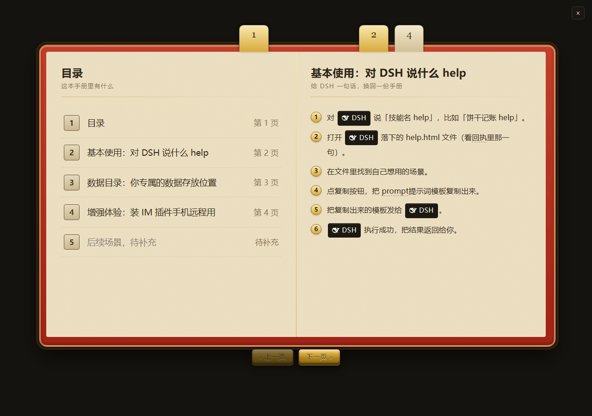
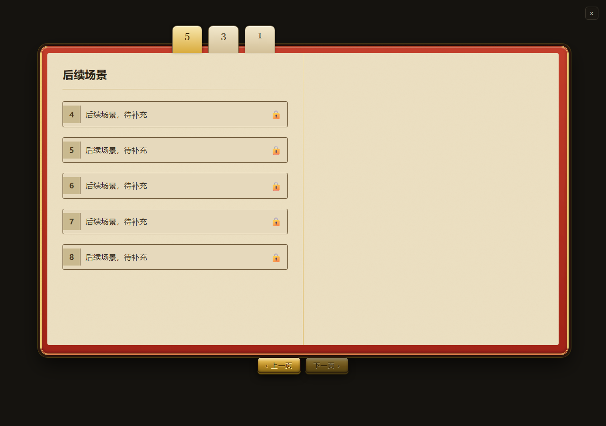
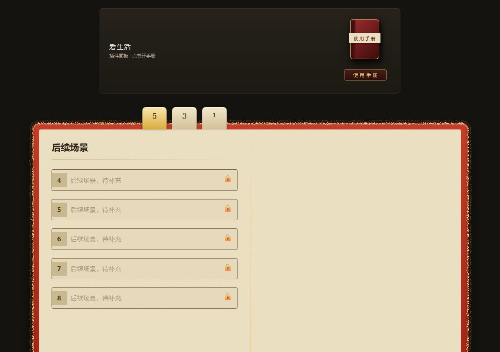
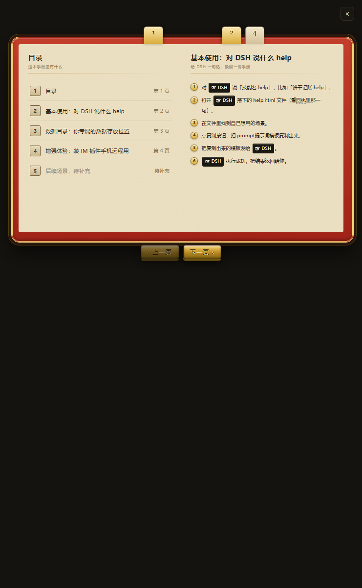
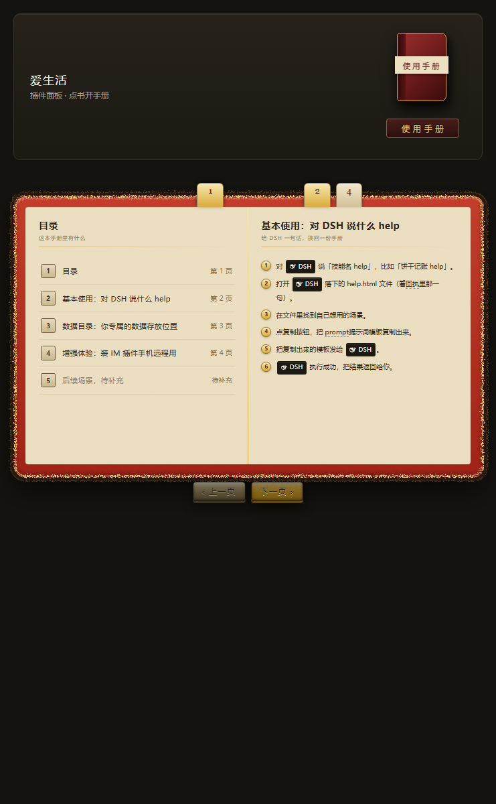

1196 双端视觉墙 · 使用手册（手册书）成品 vs 冻结原型
每格＝一格成品图 vs 对应原型图（宽处并排、窄处上下），格标写明跨页／页位与视口。点格内右上角链接在新标签打开整图。
这一页给人滚一遍看，不是交付产物，也不产出机器判据 —— 机器读数在 t1196-wall.mjs 的 T1196-WALL-RESULT 行与 t1196-证据.md。
真值原型：proto-manual-4scenes.html ｜ SHA256 2F297C2356A3B3B4C39D22051F30F20A4E9CD4D6AED010AAC3FCF31805F34280（#1241 冻结身份）
成品图：#1242 产物 ＋ #1240 壳对齐（分支 fix/manual-tabcard-1196，基线 origin/master be983a57；含 2a4887b0 的 .pg .dbadge::before 黑徽与 28bfc266 的纸宽字号）——四张成品图已按该源码重出，读数见 t1196-证据.md §10
原型图：1242-证据/proto-*-r2.png（第二轮的同一枚，与首轮逐字节相同）＋ t1196-proto-1280-跨页2.png（#1196 席自出，见下）
截图通道：CDP Emulation.setDeviceMetricsOverride（绕开 Chrome --window-size 的 500 宽下限）；重出时同页读 DOM 自证画到了真跨页（h2 为「目录＋基本使用」／「后续场景」，page-frame 两框），不是空白页
桌面段（1280 主档 ＋ 741 中宽补档）3 格
1280 主档两格＝首跨页与尾跨页两个页位；741 一格＝中宽补档（非 1280，避免隐去中间档读数，如实标注档位）。
D1
跨页 0（首跨页）· 左页目录 ／ 右页「基本使用」
视口 1280×900
成品整图
原型整图
该确认：双栏、书签 1·2·4、框下两颗铜扣（上一页暗＝禁用）、正文不被页框截断——这四点两张是否都在，以及正文相对页宽的大小。
成品 · t1196-made-1280-跨页0.png（247,948 B）

原型 · 1242-证据/proto-1280-r2.png（298,420 B）
差异双栏／书签 1·2·4／框下两颗铜扣（上一页暗＝禁用）／正文不越框——四点一致；正文相对页宽的字号也已一致（1280 下纸宽 1116px、页根字号两张同为 16.2px，见 t1196-缺陷清单.md X1「已修」）；DSH 胶囊左侧那枚黑徽两张都有（本轮放大局部复验）。剩下的差异是取景／外壳：原型那一页把演示面板卡一起拍进来、整册下移，铜扣落在 900px 视口外；成品是整屏舞台（与原型同底色），整套可见、右上角一枚关闭按钮。属取景，不是缺件。
D2
跨页 2（尾跨页）· 左页「后续场景，待补充」／ 右页空白
视口 1280×900
成品整图
原型整图
该确认：两张是否停在同一个末跨页（左页 5 行待办行全带锁、右页空白、书签 1·3·5），以及下一页铜扣是否暗＝禁用。
成品 · t1196-made-1280-跨页2.png（178,392 B）

原型 · t1196-proto-1280-跨页2.png（229,299 B，#1196 席自出）

一致同为末跨页：左页「后续场景，待补充」5 行、每行带锁，右页空白，书签 1·3·5 两侧一致；成品框下两颗铜扣（下一页暗＝禁用）。差异只在取景——原型整册放大，铜扣落在 900px 视口外。本页无 dbadge，与黑徽补丁无关。
D3
跨页 0（首跨页）· 741 中宽补档
视口 741×1200
成品整图
原型整图
该确认：中间档会不会先塌——双栏是否还在、书签 1·2·4 是否还在、两颗铜扣是否还在框下。
成品 · t1196-made-741-跨页0.png（152,489 B）

原型 · 1242-证据/proto-741-r2.png（228,936 B）

差异双栏、书签 1·2·4、框下两颗铜扣（左暗＝禁用／右亮＝可用）都在，未塌列；正文每行字数与换行位置和原型一致（741 下纸宽 701px、页根字号两张同为 9.975px）。差异只剩取景／外壳：成品右上角一枚关闭按钮，原型顶部是演示面板卡与书框外那圈金饰。
手机段（390）1 格
390 一格＝首跨页（唯一有成品图的手机档）。两张图都按 1:1 原尺寸铺在墙上，不做缩放。
M1
跨页 0（首跨页）· 左页目录 ／ 右页「基本使用」
视口 390×1500（真视口，非缩略图）
成品整图
原型整图
该确认：390 会不会退化单栏（两边都不退）、书签 1·2·4 是否还在、正文有没有溢出页框。
成品 · t1196-made-390-跨页0.png（81,579 B）
原型 · 1242-证据/proto-390-r2.png（126,033 B）
差异两张都不做单栏退化（都是左目录右正文双栏）、书签 1·2·4 都在、正文都没溢出页框；整册在画面里的占比与字号也一致（390 下纸宽 350px、页根字号两张同为 4.71px，整册同样缩到约 250px 高）。差异只剩取景／外壳：原型顶部带演示面板卡与书框外那圈金饰，成品右上角一枚关闭按钮；两张下半那片近黑都是舞台底色 #15130f，不是破图。
有意不出产物及其原因
- 手机段跨页 2（390×尾跨页）：#1242 只出了 390 首跨页，成品侧无图；原型侧可自出但无对照，故不出格。
- 741 尾跨页、1280／741／390 的其他页位：同批只拍了首跨页与 1280 尾跨页两处，其余页位无成品图。
made-*-r2.png 一套（同批第二轮成品）：本墙取票面点名的那一套（首轮成品 ＋ r2 原型）。r2 一套里 made-1280-s0-r2／made-741-s0-r2／made-390-s0-r2 三张 SHA256 与本墙所用不同（made-1280-s2-r2 与所用那张逐字节相同）；#1242 §7 只对 1280-s0 给出 0.0593 的抗锯齿／字形栅格差读数，741／390 未逐图判读，故不并排出格，避免同一页位重复计数。- 原型的瞬态动效（
.pg.enter 进场动画）：静态截图照不到，见 t1196-缺陷清单.md X2。